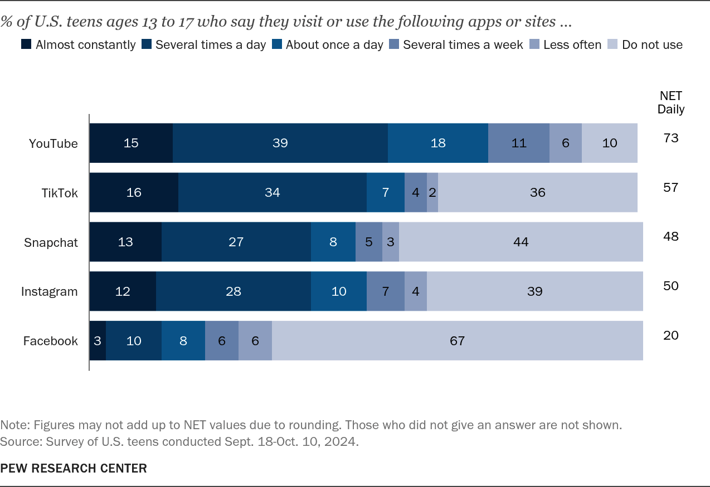
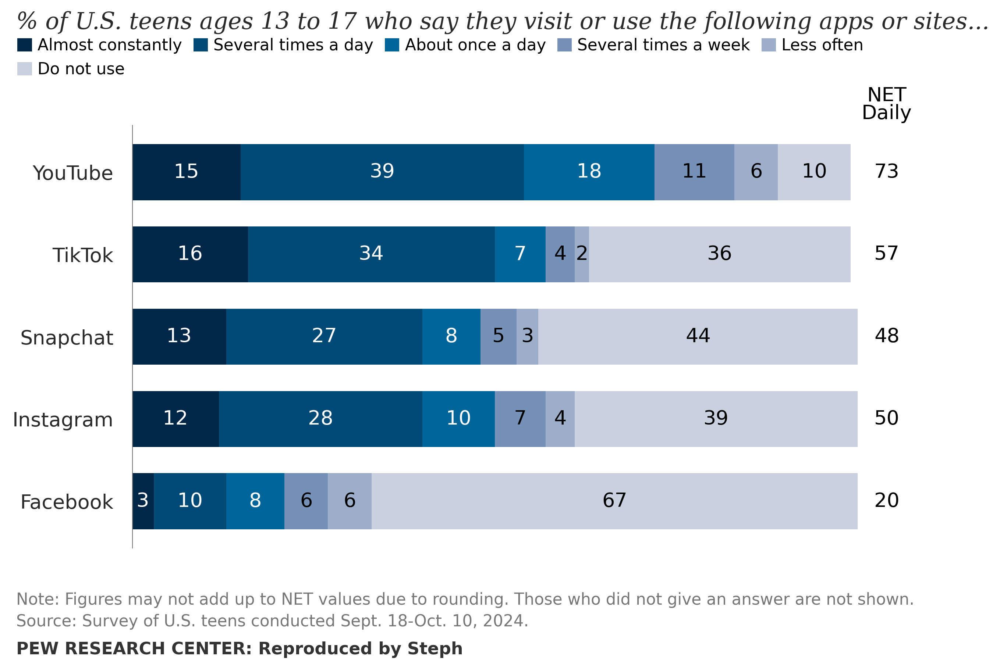
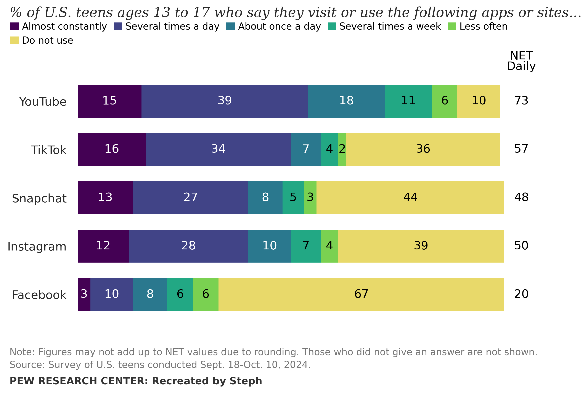

Master Visualisation
For this exercise, I selected an existing data visualisation to reproduce as closely as possible using Python. I then had to select an alternative colour scale that adhered to the responsible use of colour guidelines!

Exercise Summary
The first stage involved reproducing the visualisation in Python using the relevant dataset. The aim was to match the original as closely as possible while preserving the same underlying data and overall structure.
The second stage involved reconstructing the visualisation using an alternative colour scale!
Reproduction
The reproduction was created in Python by rebuilding the major visual elements of the master visualisation. Particular attention was given to the layout, labels, legend, colours, and spacing in order to create a close match.

Reconstruction
The reconstruction used the same data and overall chart structure as the reproduction, but used an alternative colour scale.

Colour Scale Explanation
The original colour scale was already effective and easily readable, and it was tested through the Coblis Colour Blindness Simulator, which confirmed that its categories were distinguishable for different forms of colour-vision deficiency. For my reconstruction, I decided to focus on developing an alternative colour scale that, while remaining accessible for the audience, created a more fun and youthful appearance that was appropriate for a visualisation that was based on teenagers and social media, in comparison to the original varying shades of blue. Therefore, to ensure that the ordinal nature of the frequency categories (“Almost constantly”, etc.) was represented effectively, I chose to use a Viridis-based sequential colour scale, which moves from a dark purple to a light yellow, and I ensured that the text contrasted effectively against these colours. The scale I chose was based off of Pimenta’s (n.d.) six-category Viridis scale; however, I found the original yellow to be too bright, and thus, to ensure that I was adhering to the responsible use of colour guidelines, I desaturated it. After putting this new scale into the Coblis Colour Blindness Simulator, I determined that all of the categories were still distinguishable. Additionally, selecting the darker colours to represent the more frequent platform usages, and the lighter colours for the less frequent usages, was a consistent choice between myself and the ‘master’ creators.
Generative AI Acknowledgement
Data Card
The following data card summarises the data and visual encodings used throughout the reproduction and reconstruction.
| Title |
How often teens visit online platforms:
% of U.S. teens ages 13 to 17 who say they visit or use the following apps or sites… |
|---|---|
| Summary | The visualisation shows how frequently U.S. teens (aged 13 to 17) report using five online platforms, including YouTube, TikTok, Snapchat, Instagram and Facebook. The responses are displayed as percentages across six categories, ranging from “Almost constantly” to “Do not use”. |
| Data Source |
Pew Research Center. (May 23, 2025).
How often teens visit online platforms
[Data set.]
https://www.pewresearch.org/chart/how-often-teens-visit-online-platforms/ |
| Mapping |
|
| Important Notes |
|
| Access | You can get a copy of the data used to build this visualisation through the Pew Research Center’s ‘How often teens visit online platforms’ page as a CSV file. |